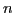
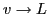
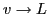
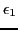

Fundamental theorems on limits
In problems involving limits the use of one or more of the
following theorems is usually implied. It is assumed that the
limit of each variable exists and is finite.
Theorem 3.8.1 The limit of the algebraic sum of a finite number of
variables is equal to the algebraic sum of the
limits of the several variables.
In particular,
Theorem 3.8.2 The limit of the product of a finite number of variables is
equal to the product of the limits of the several variables.
In particular,
Theorem 3.8.3 The limit of the quotient of two variables is equal to the
quotient of the limits of the separate variables, provided the
limit of the denominator is not zero.
In particular,
provided
.
Before proving these theorems it is necessary to establish
the following properties of infinitesimals.
- The sum of a finite number of infinitesimals is an
infinitesimal. To prove this we must show that the
numerical3.4value of this sum can be made less than any small positive
quantity (as ) that may be assigned
(§3.3). That this is possible
is evident, for, the limit of each infinitesimal being zero,
each one can be made numerically less than
( being the number of infinitesimals), and therefore their sum
can be made numerically less than .
- The product of a constant
 and an infinitesimal is an infinitesimal.
For the numerical value of the product can always be made less
than any small positive quantity (as ) by making the numerical
value of the infinitesimal less than
.
and an infinitesimal is an infinitesimal.
For the numerical value of the product can always be made less
than any small positive quantity (as ) by making the numerical
value of the infinitesimal less than
.
- If
 is a variable which approaches a limit
is a variable which approaches a limit  different from zero,
then the quotient of an infinitesimal by is also an
infinitesimal. For if ,
and
different from zero,
then the quotient of an infinitesimal by is also an
infinitesimal. For if ,
and  is any number numerically
less than , then, by definition of a limit, will ultimately become
and remain numerically greater than . Hence the quotient
, where is an infinitesimal, will ultimately
become and remain numerically less than
, and is
therefore by the previous item
an infinitesimal.
is any number numerically
less than , then, by definition of a limit, will ultimately become
and remain numerically greater than . Hence the quotient
, where is an infinitesimal, will ultimately
become and remain numerically less than
, and is
therefore by the previous item
an infinitesimal.
- The product of any finite number of infinitesimals is an
infinitesimal. For the numerical value of the product may be
made less than any small positive quantity that can be assigned.
If the given product contains factors, then since each
infinitesimal may be assumed less than the root of , the
product can be made less than itself.
Proof of Theorem 3.8.1.
Let , , , be the variables, and
, , , their respective limits. We may then write
where
,
,
, are
infinitesimals (i.e. variables having zero for a limit). Adding
Since the right-hand member is an infinitesimal by item
(1) above (§3.8),
we have, from the converse theorem (§3.3),
or,
which was to be proved. 
Proof of Theorem 3.8.2.
Let and be the variables, and their
respective limits, and
and
infinitesimals;
then
and
.
Multiplying,
or,
Since the right-hand member is an infinitesimal
by items (1) and (2) above, (§3.8), we have, as before,
which was to be proved.
Proof of Theorem 3.8.3.
Using the same notation as before,
or,
Here again the right-hand member is an infinitesimal
by item (3) above, (§3.8), if ; hence
which was to be proved.
It is evident that if any of the variables be
replaced by constants, our reasoning still holds, and
the above theorems are true.
david joyner
2008-08-11